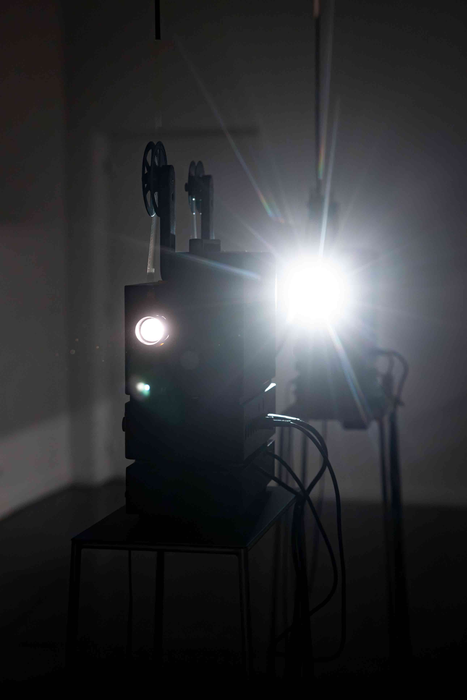
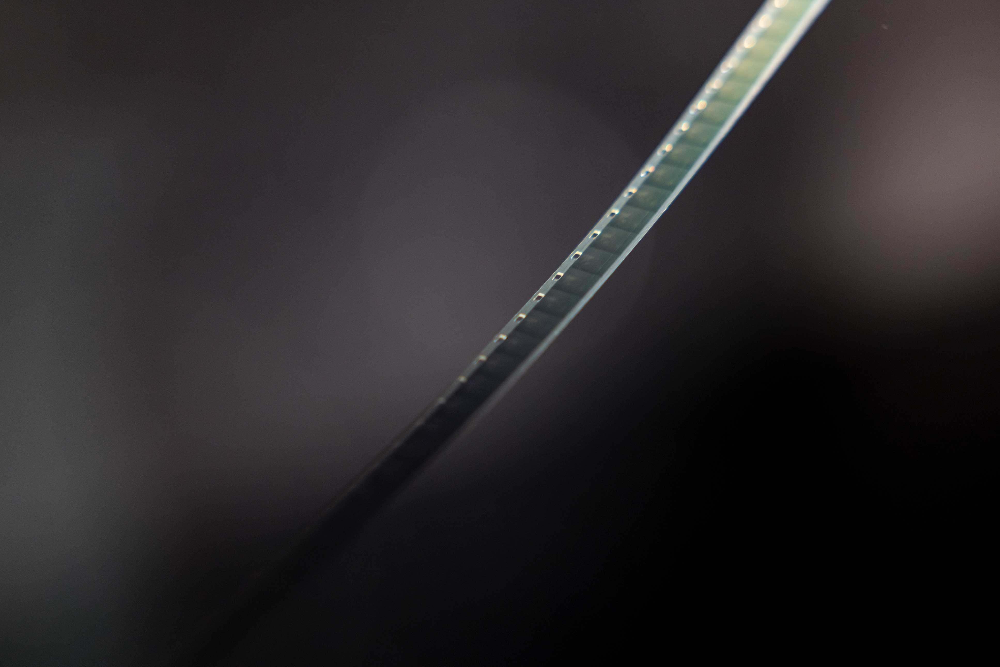
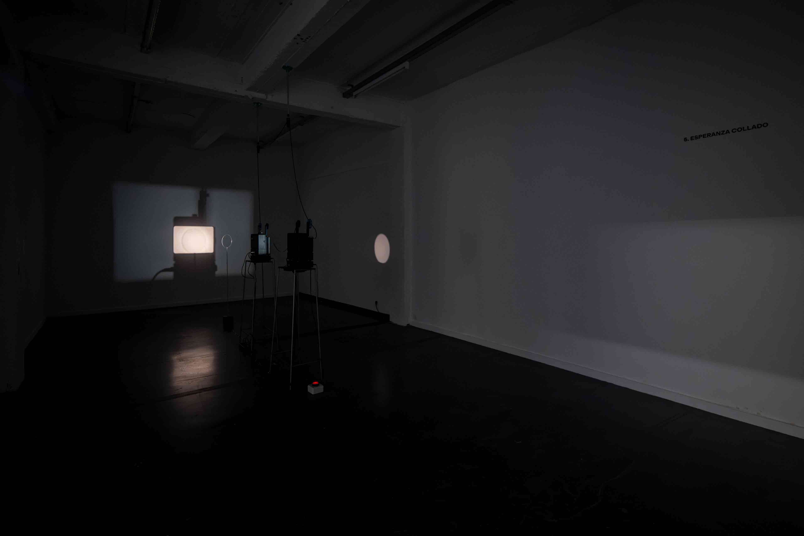
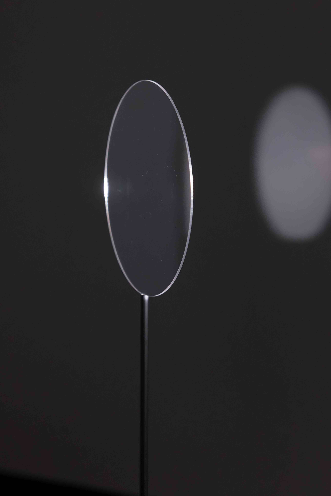

2025
Film installation
2 Braun Visacustic 2000 projectors, 2 steel plinths, rotating disc mechanism, perspex disc, 2 telescopic tubes with hanging reels, Super 8mm film, looper
Film: Kodak 50D Super 8mm, silent, color, Taipei, 2025. Processed by Modern Cinema (Taipei). Projection prints by Andec Cinegrell (Berlin)
Commissioned by Europalia España for the exhibition 'Iván Zulueta: Through the Looking Glass', curated by Andrea Cinel (10 Oct 2025 — 4 Jan 2026). De Garage, Kunsthal Mechelen (Belgium)
Especial thanks to Renzo Dal Bo, Hsien-Yu Cheng, Bruno Delgado Ramo, Christopher Gorsky, Bernd Lutzeler
→ Digital documentation
Dissipation Essays is a film installation that offers a material and phenomenological reflection on cinema as an ephemeral, spatial and performative medium in dialogue with the work of Iván Zulueta. The starting point is a visual study of the dissipation of the image through the evaporation of clouds, in resonance with Zulueta’s films such as Aquarium (1975) and Leo es Pardo (1976), where temporal perception, atmospheric motion and disappearance are articulated as both formal and poetic strategies.
The installation consists of two Super 8mm projectors placed concentrically. The rear projector casts the shadow of the front projector, which in turn projects its image within its own shadow. This setup creates a “mise en abyme” situation where image and shadow are inscribed in the same optical field, producing a visual paradox that explores cinema’s self-reflexivity and dialectical nature. The installation is completed by a rotating disc, functioning both as screen and reflective surface. This element disperses the projected image throughout the exhibition space, suggesting a deflected circulation of light and evoking Zulueta’s observations on the spatial displacement of light.